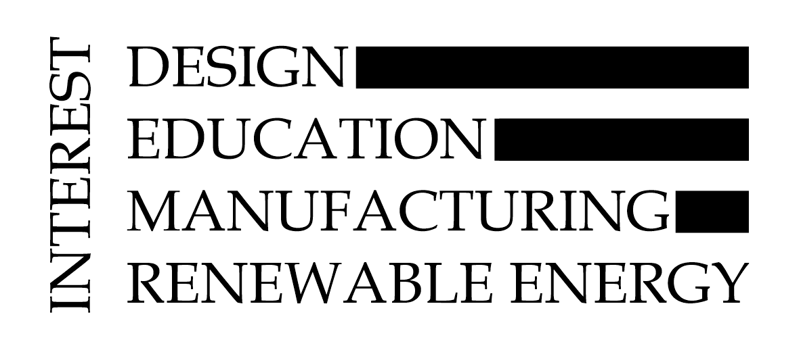
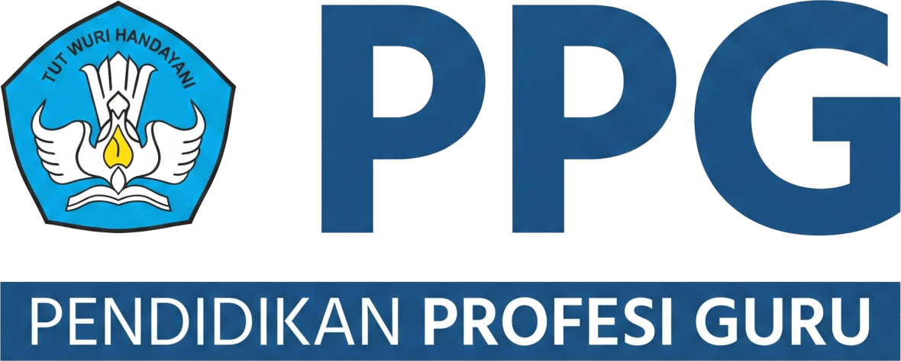
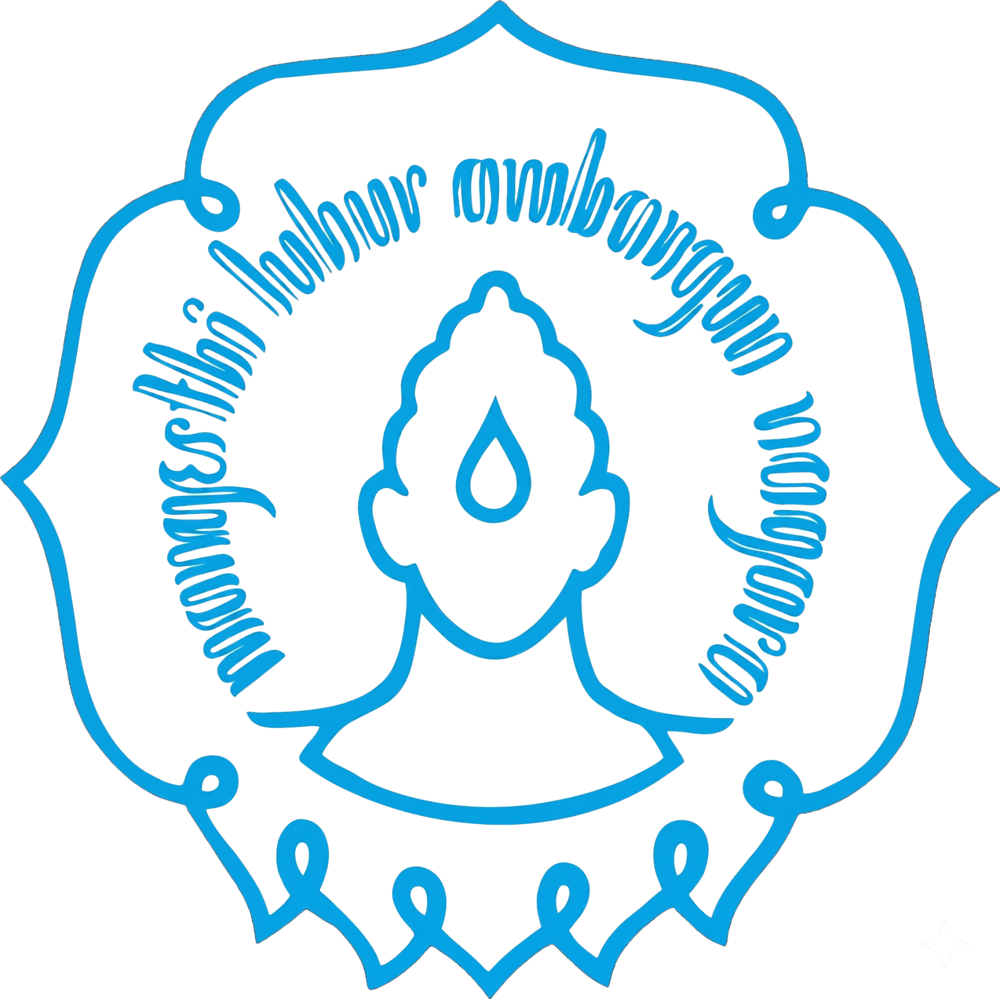
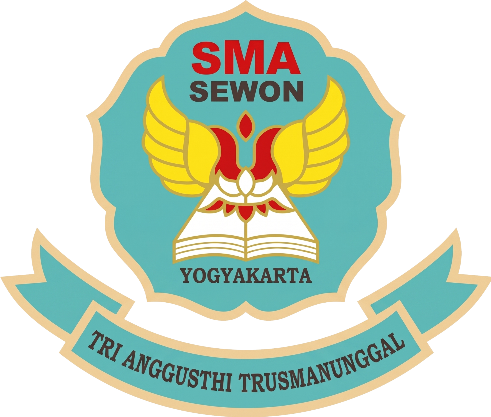

Mari Kenal Lebih Dekat
Tentang Saya...
Perkenalkan, saya Muhammad Harist Mishbahuddin, berasal dari Bantul, Yogyakarta—sebuah daerah yang dikenal dengan kekayaan budaya, kearifan lokal, serta semangat gotong royong yang kuat dalam kehidupan masyarakatnya. Nilai-nilai tersebut menjadi bagian penting dalam membentuk karakter saya hingga saat ini.
Saya merupakan lulusan Pendidikan Teknik Mesin yang memiliki ketertarikan pada bidang desain dan manufaktur berbasis teknologi, seperti CAD, CNC, CAM, dan CAE. Ketertarikan ini saya kembangkan melalui berbagai pengalaman, baik akademik, pelatihan dan sertifikasi internasional, hingga pengalaman kerja di industri. Namun, lebih dari sekadar penguasaan teknis, saya memiliki panggilan untuk menjadi seorang pendidik profesional yang mampu menjembatani kebutuhan dunia pendidikan dengan dunia industri.
Inspirasi saya menjadi guru berangkat dari kepedulian terhadap kondisi pendidikan di lingkungan sekitar, khususnya bagi peserta didik yang menghadapi keterbatasan ekonomi. Saya meyakini bahwa pendidikan adalah kunci untuk memutus rantai keterbatasan tersebut. Oleh karena itu, saya berkomitmen untuk menghadirkan pembelajaran yang tidak hanya berorientasi pada pengetahuan dan keterampilan, tetapi juga menumbuhkan semangat belajar, ketekunan, dan keyakinan bahwa setiap individu memiliki kesempatan untuk meraih masa depan yang lebih baik.
Sebagai calon pendidik, saya juga berupaya menciptakan pembelajaran yang aktif, bermakna, dan relevan dengan perkembangan zaman, khususnya di bidang teknik mesin. Saya percaya bahwa pembelajaran yang baik adalah pembelajaran yang mampu mengembangkan potensi peserta didik sekaligus mendorong saya untuk terus belajar dan bertumbuh.

"Kesuksesan sejati lahir dari tekad yang kuat, bukan hanya kecerdasan. Pendidikan bukan sekadar mengumpulkan ilmu, tetapi proses untuk menjadi pribadi yang lebih baik. Teruslah berjuang dan teruslah berkembang."
— Zero to Hero


PPG Prajabatan
(Feb 2026 - Sekarang)
(Okt 2025 - Jan 2026)
PT Woodland Furniture Industry
(Agu 2024 - Agu 2025)
Staff R&D (Drafter dan Programmer CNC)
Universitas Sebelas Maret
S1 Pendidikan Teknik Mesin
(Agu 2020 - Mei 2024)
- MSIB PT CADFEM Simulation Technology Indonesia (Feb 2024 - Jun 2024)
- Asisten Dosen CAD, CNC, CAM (Sep 2022 - Jun 2024)
- PLP SMKN 1 Sawit (Sep 2023 - Des 2023)
- Pengabdian Masyarakat Mitra Internasional (Apr 2023 - Sep 2023)
- Short Course GD&T Nanyang Technological University (Mei 2023)
- Wakil Ketua Himpunan KOMPRESI UNS (Feb 2022 - Feb 2023)
- Programmer dan Operator Unit Produksi SMK Warga (Okt 2022 - Des 2022)
- Staf Departemen PSDM KOMPRESI UNS (Feb 2021 - Feb 2022)

SMAN 1 Sewon
(Agu 2017 - Mei 2020)
- Wakil Ketua MPK SMAN 1 Sewon (Okt 2018 - Okt 2019)
- Staff Divisi Bela Negara MPK SMAN 1 Sewon (Okt 2017 - Okt 2018)